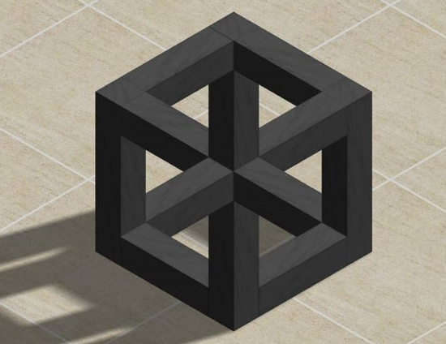

第一节：精讲
1、Javascript基本介绍与发展
JavaScript能用来做什么？
页面分为：结构、样式、行为。
对页面进行渲染，让页面有行为，让页面动起来。
动起来不一定专指动画：
JavaScript的历史？
JavaScript的组成：
ECMAScript、BOM、DOM
ECMAScript是一个标准，它规定了语法、类型、语句、关键字、保留子、操作符、对象。（相当于法律）
BOM（浏览器对象模型）：可以访问浏览器窗口的浏览器对象模型，对浏览器窗口进行操作。
DOM（文档对象类型）：DOM把整个页面映射成一个多层节点结构。HTML页面组成都是某种类型的节点，这些节点又包含着不同类型的数据
2、Javascript和HTML5的关系
HTML5是一种新的技术，就目前而言，我们所知的HTML5都是一些标签，但是有了JS之后，这些标签深层的扩展功能才得以实现。
比如video标签，我们对其理解为一个简单的标签，但实际上，video标签还有更深层次的扩展功能。
3、如何编写及运行JS
JS也是一种脚本语言，他可以有两种方式在HTML页面进行引入，一种是外联，一种是内部。
外联JS的写法为：
<script src="相对路径"></script>
这是一条html语句，原则上可以放在html页面的任意位置，不用和link标签一样非得放在head部分
相对路径链接的是JavaScript文件，文件的扩展名为.js，如index.js
内部JS的写法为：
<script>
//在script标签内写js脚本
</script>
错误的写法：
<script src="相对路径">
//在script标签内写js脚本
</script>
=============================================================================
如何将信息呈现给用户：
1.向页面中打印内容：
document.write(“这是一些文本内容”);
可以直接解析标签：
document.write(“<strong>加粗的内容</strong>”);
转义字符：
< ==== <
> ==== >
document.write(“<strong>这是一些加粗的内容</strong>”);
2.将信息打印到浏览器的控制台
console.log("hello world")
跟document.write()使用方式类似，但是不能解析标签
3.弹出框显示信息
alert()方法
alert()方法可以弹出()里面的内容，同时可以停止浏览器加载代码
浏览器解析代码的顺序（从上到下，从左到右）
只能以字符的形式显示信息，非自付会被强行转成字符
4、变量的概念及基本运算
他叫汤姆，他是一只猫。
猫由什么组成？猫皮，猫肉，猫爪，比起吃老鼠更愿意玩老鼠的心，每次整老鼠反而被整的笨脑子。
它的主人每次叫它什么？那个批了张猫皮，长着猫肉，有猫爪.....的什么玩意，你过来一下...
不！我们叫它汤姆！这是这只猫的名字！
在计算机中，我们把这只猫塞进一个汤姆的名字内。这个“汤姆”，就是一个变量。
如何创建一个变量？
var tom = “猫”;
var a = “<strong>加粗的内容</strong>”;
var是一个关键字，用来声明一个变量；
＝ 表示赋值（取名字）；
声明变量以“＝”为区分，左边为变量名（被赋值），右边为存放进变量中的内容（给变量赋值）。
注意：JS中的“＝”号，和数学中的“＝”不一样，在JS中“＝”的作用是赋值（取名字）。
var 声明变量的底层原理：我们所写的程序运行在内存中，当我们使用关键字var 声明一个变量的时候，计算机会从内存中划分一个空间，为我们存放不同类型的内容做准备。
变量的类型（数据类型）
因为存放在变量中的数据是放在计算机的内存中的，计算机只识别0和1，所以需要对不同类型的数据进行转义，转义的结果会导致所需空间不同，所以JS中分成很多种数据类型，以便计算机储存时使用。
数值类型（number）：1234567890
字符类型（string）："123" 'asd' "文字" "数据"（被单引号或双引号，包裹的部分，引号必须配套使用）
定义了未赋值类型（undefined）：这是一种特殊类型，当变量被声明，但是没有被赋值的时候，那么该变量的类型的undefined
布尔值类型（boolean）：true，false （真，假）
对象类型（object）：{}object
数组类型（array）：[]
如何区分或得知不同的数据类型：
通过关键字 typeof 变量名
小技巧：声明一串变量时可以这么写，var a=1,b=2,c=3;(但是不推荐初学者这么用，因为这样的声明方式会导致注释不明确)
5、变量命名规则和关键字的介绍
变量的名字 就像 人的名字一样，不能乱起。
你的代码不是只有你一个人看，变量既然是名字，那就这个名字就要有特殊的意义：
举个栗子：翠花，我们能从这个名字中得到什么信息？（这个名字应该是个女的，父母应该希望她长得跟花一样，一个美好的愿景）
小钢炮？
我们能从名字中读出很多含义，是因为我们的语言常识，同样，变量也有一套类似的常识标准，代表了各种含义，如下：
也就是第一个规则：
语义化，前缀就能表示出这个变量的类型
第二个规则：
开头必须为字母或者$或者_
那么能不能使用typeof做为变量名呢？想都别想！
第三个规则：
关键字和保留字不能用做变量名。
关键字：
以下这些关键字用于执行特定操作等。按照规则，关键字也是语言保留的，不能用做标识符。
break | do | instanceof | typeof |
case | else | new | var |
catch | finally | return | void |
continue | for | switch | while |
debugger* | function | this | with |
default | if | throw | delete |
in | try | | |
abstract | enum | int | short |
boolean | export | interface | static |
byte | extends | long | super |
char | final | native | synchronized |
class | float | package | throws |
const | goto | private | transient |
debugger | implements | protected | volatile |
double | import | public | |
6、算术、赋值、关系运算符的讲解
JS中的运算符分为：算术／赋值／关系／逻辑／自增自减
算术运算符： +加法 -减法 *乘法 /除法 %取余
var a = 1, b = 2;
a + b = 3
a - b = -1
a * b = 2
a / b = 0.5
a % b = 1
目测，跟数学中的运算符是一样的。但是：
var a = "1", b = "2";
a * b = 2
a / b = 0.5
a - b = -1
a + b = ???
+号，有两层意思，第一层算数之间的加法；第二层字符串的连接；执行过程中，先检测加号两边的数据类型，如果发现字符型，那就先 生效字符的连接
数据类型转换：强制转换、隐式转换
其实还是有点不一样：和我们概念中的逻辑运算符很多都是不一样的：
比如： = == ===
并且不同数据类型之间的运算得到的结果，可能不是我们意想中的；
有什么差别呢？
赋值运算符： = += -= *= /= %=
运算符 | 例子 | 等价于 | 运算结果 |
= | y = 6 | y = 6 | y = 6 |
+= | y += 1 | y = y+1 | y = 7 |
-= | y -= 1 | y = y-1 | y = 5 |
*= | y *= 2 | y = y*2 | y = 12 |
/= | y /= 2 | y = y/2 | y = 3 |
%= | y %= 4 | y = y%4 | y = 2 |
关系运算符： < <= > >= == != ===
运算符 | 说明 | 例子 | 运算结果 |
== | 等于 | 2 == 3 | false |
=== | 恒等于（值和类型都要做比较） | 2 === 2 2 === "2" | true false |
!= | 不等于 | 2 != 3 | true |
> | 大于 | 2 > 3 | false |
< | 小于 | 2 < 3 | true |
>= | 大于等于 | 2 >= 3 | false |
<= | 小于等于 | 2 <= 3 | true |
7、编程习惯
语句结束要加分号，虽然不加分号在JS语法上没有什么问题，但是建议不要省略分号，加了分号之后可以使用软件压缩。
这是一种良好的编程习惯（JavaScript权威指南）。
第二节：应用
1.为抵抗洪水，战士连续作战89小时，编程计算共多少天零多少小时？
2.小明要到美国旅游，可是那里的温度是以华氏度为单位记录的。
它需要一个程序将华氏温度（80度）转换为摄氏度，并以华氏度和摄氏度为单位分别显示该温度。
提示：摄氏度与华氏度的转换公式为：摄氏度 = 5/9.0*(华氏度-32) // 保留3位小数。
第三节：精讲
1、变量不同类型之间的自动、手动类型转换
我们想做数学运算的时候，应该先对所有的数据类型进行统一（统一成数字格式），这个时候我们就该用到数据类型的转换。
var a=3,b="10",c=true;
alert(a+b);
alert(b+c);
alert(a+c);
运算结果好像并不是我们想要的。
转换成字符型：
toString()
var num = 123;
num.toString();转换成字符串
将num从数值型变成字符型
toFixed()
var num = 123.456;
num.toFixed(n);转换成字符串的同时保留n位小数
拓展：浮点数：
电脑在运算过程中以正确的二进制浮点进行运算，但是我们输入的都是十进制的数，这两者并不是总是能转化的那么准确，有时候会得到正确的结果，但有时候就没那么幸运。
alert(0.7+0.1);???
alert(0.6+0.2);???
转换成数值：
parseInt();转换成整数，可以接受两个值
parseFloat();转换成浮点数
两者的不同：
parseInt();该方法从左向右，检测数字或字符串，当第一次发现一个不为数字的字符时，把之前的所有进行返回，如果字符串中第一个就不是数字，那么返回NaN
例如：parseInt("123abc");a做为第一个不是数字的字符；返回a之前的所有值，则该方法返回123
parseInt("abc123");a做为第一个不是数字的字符，且处在字符串的第一位，则判定该字符串无法转换为数字返回NaN
parseFloat();该方法检索数字或字符串后面第一个.后的不为数字的字符，并对之前所有的结果进行返回，如果第一个字符不为数字，那么返回NaN
例如：parseFloat(“123.456");返回123.456
parseFloat(“123.4a56");返回123.4
parseFloat(“123.00");返回123
parseFloat(“123.0a56");返回123
想想为什么？
关于浮点数：Math.round()四舍五入取整浮点数。
认识NaN：它是一种特殊的Number类型，代表意外转换的数字，NaN和任何东西都不相等，包括它自己。
2.逻辑运算
一门计算机语言，编程的核心在于逻辑思想，当我们在编写程序的时候，逻辑是否通顺，是能否写出程序的关键，可以说如果掌握了逻辑，那么你就踏入的计算机编程的大门。
逻辑运算符： && || !
运算符 | 说明 | 例子 | 运算结果 |
&& | 逻辑与（and） | x = 2; y = 6; x>5 && y>5 | FALSE |
|| | 逻辑或（or） | x = 2; y = 6; x>5 || y>5 | TRUE |
! | 逻辑非，取逻辑的反面 | x = 2; y = 6; !(x > y) | TRUE |
3.自增自减运算
++ --
a++表示在a原有的基础上增加1
a--表示在a原有的基础上减小1
那么，++a 和 --a 呢?
var a = 1;
alert(a);
var b = 1;
alert(b++);
alert(b);
var c = 1;
alert(++c);
前自增与后自增有本质的区别，他们相同点都是为自身加了1，不同点是
前自增是先加1，再使用操作数的值
后自增是先使用操作数的值，再加1
前自减和后自减同上。
4.NaN的概念和应用
NaN：是一种特殊的Number类型，代表意外转换的数字，NaN和任何东西都不相等。厉害到自己都不等于自己
not a number不是一个数字的数值

alert(NaN == NaN);返回false
认识isNaN()函数，该函数判断括号内的值是否是NaN，是就返回true，不是就返回false
5.Number方法的应用
Number()为严格数据类型转换：
Number("hello world"); //NaN
Number("123456"); //123456
第四节：应用
1. 计算两个文本框的和
计算两个文本框的差
计算两个文本框的积
计算两个文本框的商
2. var k=10;
var sum = k++ + ++k +k +k++;
console.log(k);
console.log(sum);
3.掌握逻辑运算的意义
4.掌握NaN的含义
5.掌握Number函数的转换结果
第五节：综合应用
1.计算两个文本框的加减乘除
要求：1.使用parseInt方法类型转换
2.计算结果是用Math.round方法四舍五入
2.计算一个半径为80cm的圆的面积。打印到页面上。
pai * r * r
3.1415
圆的周长
2 * pai * r
3.角度转弧度，公式
jiao = 180 / pai * hu